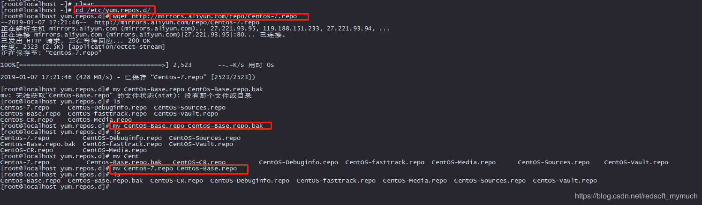
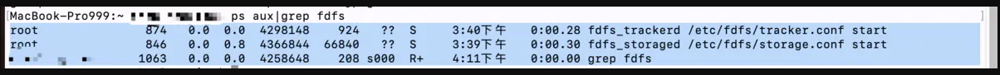
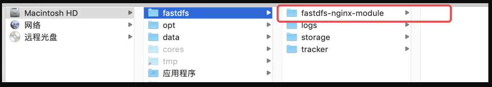
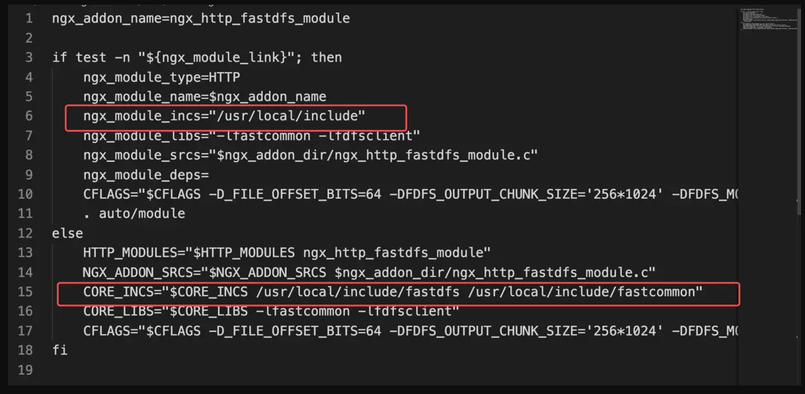
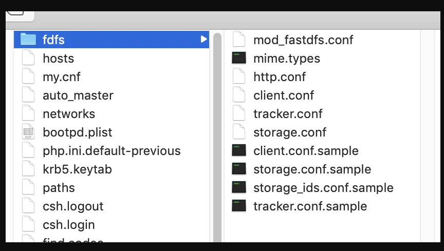
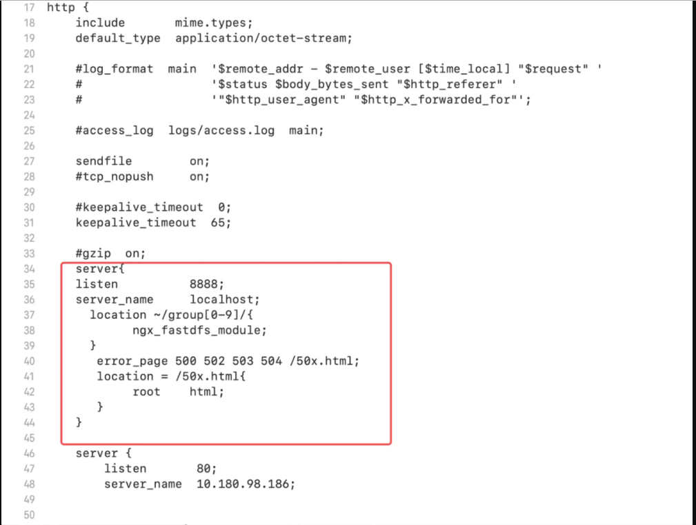

@(工作笔记)
Nginx-record
[TOC]
CentOS 7如何更换yum镜像源为阿里云
- 切换到/etc/yum.repos.d下
使用命令：wget http://mirrors.aliyun.com/repo/Centos-7.repo下载阿里云的资源文件
- 如果没有wget工具，可以使用yum -y install wget下载安装
使用命令：mv CentOS-Base.repo CentOS-Base.repo.bak 备份既有的配置文件
使用命令：mv Centos-7.repo CentOS-Base.repo 把下载的文件重命名。 
然后依次执行下面的命令。
yum clean all
yum makecache
yum update
2019 年如何在 CentOS 7 上安装最新版 Nginx
https://segmentfault.com/a/1190000018109309
yum install epel-release -y
yum install nginx -y
# 开机启动
systemctl enable nginx
# 启动nginx
systemctl start nginx
# 查看状态
systemctl status nginx
启动 Nginx
sudo systemctl start nginx 停止 Nginx
sudo systemctl stop nginx 重启 Nginx
sudo systemctl restart nginx 修改 Nginx 配置后，重新加载
sudo systemctl reload nginx 设置开机启动 Nginx
sudo systemctl enable nginx 关闭开机启动 Nginx
sudo systemctl disable nginx
Mac 安装FastDFS与Nginx
最近进了FastDFS安装的坑，爬了很久，终于出来了，写个教程，有朋友用到可以参考下。 首先说下就是版本很重要，我一直就是因为4件套版本不对应安装后出现了各种问题，下面是我安装成功使用的安装包。 链接: https://pan.baidu.com/s/1DyrVGs3EOOOQcm6TmOgW4A 提取码: 2kcf 附我的Mac版本是10.14.5 在此也非常感谢之前趟坑并留下分享经验大佬的教程~ 参考教程：【1】https://blog.csdn.net/Yann_8888/article/details/94590657 【2】https://www.cnblogs.com/tanzi-888/articles/12022669.html
1 ，解除mac安全限制,mac默认不允许操作系统目录
重启电脑 按住command+r
打开终端,输入csrutil disable 禁用安全限制
如果想要恢复 csrutil enable 启用
重启
这时候如果创建文件提示这个错误 Read-only file system， 尝试输入命令：
sudo mount -uw /
将包下载下来然后解压缩
2，新建fastdfs目录
mkdir -p /Users/stone/software/fastdfs/tracker
mkdir -p /Users/stone/software/fastdfs/storage
mkdir -p /Users/stone/software/fastdfs/logs
3， 安装libfastcommoncd cd 进入文件夹内
sudo ./make.sh && sudo ./make.sh install
4，安装fastdfs cd 进入文件夹内
sudo ./make.sh && sudo ./make.sh install
5, 进入配置文件目录,修改文件名
cd /etc/fdfs
sudo cp tracker.conf.sample tracker.conf
sudo cp storage.conf.sample storage.conf
sudo cp client.conf.sample client.conf
6,配置tracker
sudo vim /etc/fdfs/tracker.conf
修改base_path,这里的路径为一开始新建的文件夹的目录，用来存储文件和日志。
base_path=/Users/stone/software/fastdfs/tracker # tracker的数据和日志存放目录
7,配置storage
修改配置文件： sudo vim /etc/fdfs/storage.conf
base_path=/Users/stone/software/fastdfs/storage # storage的数据和日志存放目录
store_path0=/Users/stone/software/fastdfs/storage # storage的上传文件存放路径
tracker_server=xxxxx:22122 # tracker地址为你本机的ip地址--打开小齿轮进入网络查看即可
8，启动tracker和storage
fdfs_trackerd /etc/fdfs/tracker.conf start
fdfs_storaged /etc/fdfs/storage.conf start
9 ,查看启动是否成功
ps aux|grep fdfs

image.png
10，配置client.conf
sudo vim /etc/fdfs/client.conf
# 日志文件存放目录
base_path=/Users/stone/software/fastdfs/logs
# tracker 主机端口
tracker_server=你本机的ip:22122
11，安装fastdfs-nginx-module
解压 将其移动到开始新建的文件夹内

image.png
（1）编辑配置文件
cd /fastdfs/fastdfs-nginx-module/src/
sudo vim config

image.png
注意自己检查下路径是否正确，cd进入 /usr/local/include查看这两个工具是否存在
（2）编辑mod_fastdfs.conf
还是刚才的目录
sudo vim /mod_fastdfs.conf
查找各项配置如下：
connect_timeout=10 # 客户端访问文件连接超时时长（单位：秒）
tracker_server=你本机的ip:22122 # tracker服务IP和端口
url_have_group_name=true # 访问链接前缀加上组名
store_path0=/Users/stone/software/fastdfs/storage # 文件存储路径
（3）将mod_fastdfs.conf移动到/etc/fdfs，
sudo cp mod_fastdfs.conf /etc/fdfs/
(4) 复制部fastdfs源码目录中部分配置文件到/etc/fdfs中
这里我测试了，不复制确实是上传不能成功 cd 进入下载的文件fastdfs-master/conf
cp http.conf mime.types /etc/fdfs/
(5)上传测试，先确保tracker和storage都启动了
sudo fdfs_upload_file /etc/fdfs/client.conf .1.jpg
如果返回类型 group1/M00/00/00/CrRiul6Fl7iAPFX1AABpxto40Nc71.jpeg的标识就表示上传成功
(6) 关于库文件引用，可以查看下本地lib,lib64是否包含libfastcommon.so 和libfdfsclient.so如果没有的话可以手动复制进去
到此为止/etc/fdfs下目录如下，一共10个文件：

image.png
12，安装Nginx
Nginx和中间件的版本有所关联，所以要务必弄正确 解压，cd进入
（1）为Nginx关联中间件,add-module的路径就是存放下载的fastdfs-nginx-module的路径
./configure --prefix=/usr/local/Cellar/nginx/1.17.0 --sbin-path=/usr/local/Cellar/nginx/1.17.0/bin/nginx --add-module='/Users/stone/software/fastdfs/fastdfs-nginx-module/src' --with-cc-opt='-I/usr/local/opt/pcre/include -I/usr/local/opt/openssl/include' --with-ld-opt='-L/usr/local/opt/pcre/lib -L/usr/local/opt/openssl/lib' --conf-path=/usr/local/etc/nginx/nginx.conf --pid-path=/usr/local/var/run/nginx.pid --lock-path=/usr/local/var/run/nginx.lock --http-client-body-temp-path=/usr/local/var/run/nginx/client_body_temp --http-proxy-temp-path=/usr/local/var/run/nginx/proxy_temp --http-fastcgi-temp-path=/usr/local/var/run/nginx/fastcgi_temp --http-uwsgi-temp-path=/usr/local/var/run/nginx/uwsgi_temp --http-scgi-temp-path=/usr/local/var/run/nginx/scgi_temp --http-log-path=/usr/local/var/log/nginx/access.log --error-log-path=/usr/local/var/log/nginx/error.log --with-compat --with-debug --with-http_addition_module --with-http_auth_request_module --with-http_dav_module --with-http_degradation_module --with-http_flv_module --with-http_gunzip_module --with-http_gzip_static_module --with-http_mp4_module --with-http_random_index_module --with-http_realip_module --with-http_secure_link_module --with-http_slice_module --with-http_ssl_module --with-http_stub_status_module --with-http_sub_module --with-http_v2_module --with-ipv6 --with-mail --with-mail_ssl_module --with-pcre --with-pcre-jit --with-stream --with-stream_realip_module --with-stream_ssl_module --with-stream_ssl_preread_module --with-http_image_filter_module
# sudo ./configure --prefix=/opt/nginx --sbin-path=/usr/bin/nginx --add-module=/fastdfs/fastdfs-nginx-module/src
（2）安装
sudo make && sudo make install
安装成功的一个标志是控制台没有错误出现
（3）配置group访问路径
# sudo vim /opt/nginx/conf/nginx.conf
vim /usr/local/etc/nginx/nginx.conf
在server上添加一项
server{
listen 8888;
server_name localhost;
location ~/group[0-9]/{
ngx_fastdfs_module;
}
error_page 500 502 503 504 /50x.html;
location = /50x.html{
root html;
}
}
最终文件如下

image.png
（5）启动Nginx,启动前线关闭防火墙，打开小齿轮，安全性和隐私，自己关闭即可

image.png
sudo nginx
sudo nginx -s stop #终止
sudo nginx -s reload #重启
启动是否成功可以使用：
ps aux|grep nginx
（6）查看是否可以访问
image.png
总结：
1，版本要对应，如果时间久了可以自己搞一个四件套 [fastdfs维护地址]https://github.com/happyfish100/fastdfs 2，注意配置路径正确，Mac使用command+opthin+C快速复制路径 3，如果报错，可以尝试将libfastcommon.so 和libfdfsclient.so复制到lib和lib64的文件夹下。
(转)MAC机下为利用brew安装nginx，新增模块
https://www.jianshu.com/p/6afb499852a6
切换IP的脚本
#!/usr/bin/env bash
folder=`dirname $0`
cd $folder
# TODO 判断$1 是否符合 ip地址规范
gsed -i '/^base_path/d' tracker.conf && echo 'base_path=/Users/stone/software/fastdfs/tracker' >> tracker.conf
gsed -i '/^base_path/d' storage.conf && echo 'base_path=/Users/stone/software/fastdfs/storage' >> storage.conf
gsed -i '/^store_path0/d' storage.conf && echo 'store_path0=/Users/stone/software/fastdfs/storage' >> storage.conf
gsed -i '/^tracker_server/d' storage.conf && echo "tracker_server=$1" >> storage.conf
gsed -i '/^tracker_server/d' client.conf && echo "tracker_server=$1" >> client.conf
gsed -i '/^base_path/d' client.conf && echo 'base_path=/Users/stone/software/fastdfs/logs' >> client.conf
gsed -i '/^connect_timeou/d' mod_fastdfs.conf && echo 'connect_timeou=10' >> mod_fastdfs.conf
gsed -i '/^tracker_server/d' mod_fastdfs.conf && echo "tracker_server=$1" >> mod_fastdfs.conf
gsed -i '/^url_have_group_name/d' mod_fastdfs.conf && echo 'url_have_group_name=true' >> mod_fastdfs.conf
gsed -i '/^store_path0/d' mod_fastdfs.conf && echo 'store_path0=/Users/stone/software/fastdfs/storage' >> mod_fastdfs.conf
grep --color=always --exclude-dir={node_modules,.git,.svn,.hg,CVS,.bzr} -HIris "^tracker_server" . | grep -v "sample" | grep -v "change_id_addr.sh"